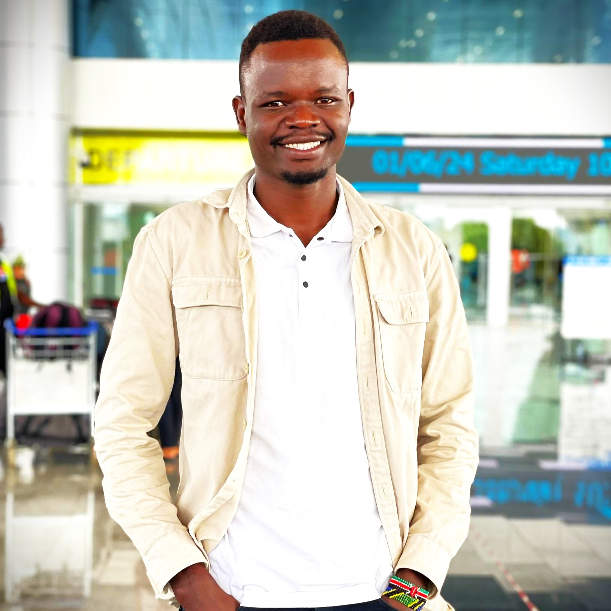

1. Bio Data
- First Name: David
- Last Name: Lokwii
- Other Name: Lomoe
- Student's Reg.No: VU-DIT-2403-0072-EVE
- Phone No: +256701363007
- Email: davidlomoe431@gmail.com
- Country: Uganda
2. Education Background
| Institution |
Award |
Duration |
| Victoria university |
Information Technology |
2024-2026 |
| St.Mary's College Kisubi |
U.A.C.E |
2014-2015 |
| St.Mary's College Kisubi |
U.C.E |
2010-2013 |
3. Background
I am a Ugandan born from the horn of Uganda in a region called Karamoja,a jie by tribe from Kotido district and a boy child who seen through life but has never given up.
I like learning,exploring and travelling.
4. Key Achievements
- I was awarded a Google Africa Developer scholarship for cloud computing in 2019.
- I have done a number of researches with different organisations.
- I have travelled across many places in Uganda and Kenya.